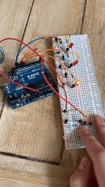
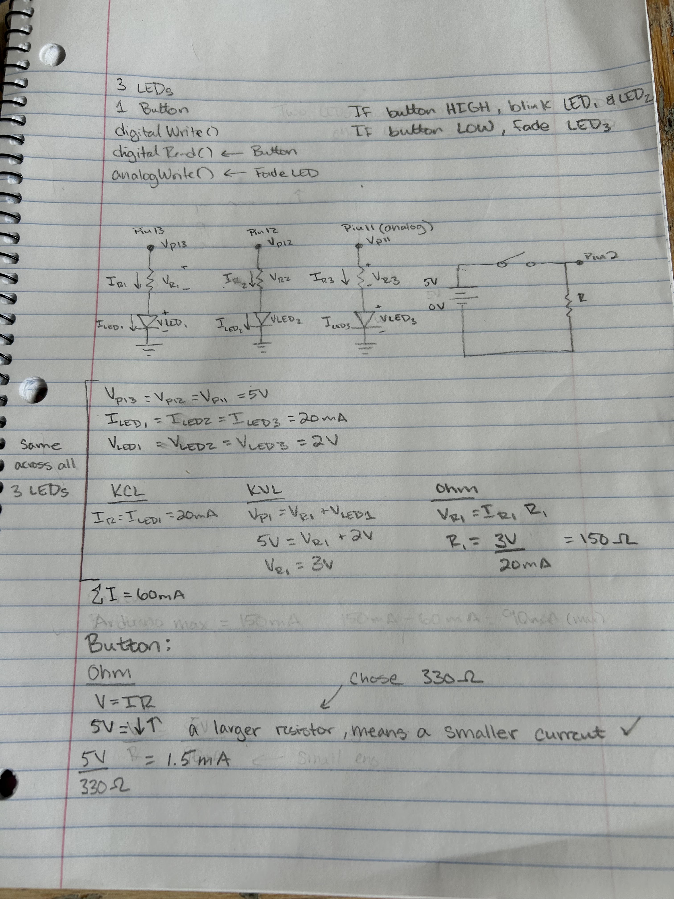
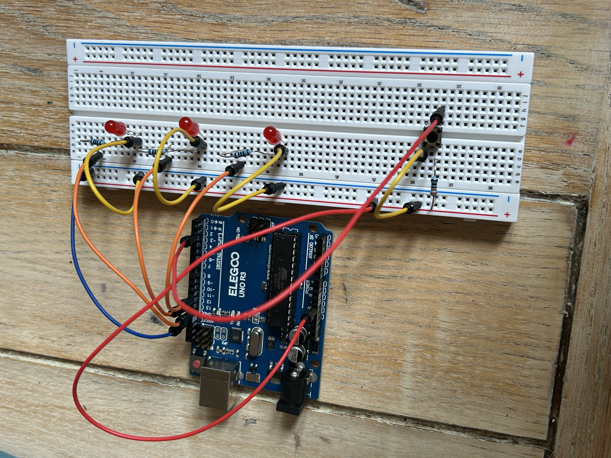

Here is all the documentation for assignment 2!

Pictured above is the schematic of the the A2 circuts. I used the schematic to plan out how to build the circut and determine what resiter I needed to use. The pin voltages are each 5V and the LEDs each use 2V with a current of 20mA. Kirchoff's and Ohm's laws, I determined the resister needed to be 150 ohms for the LEDS. For the button I used Ohm's law to show that a larger resitor means a smaller current I want a small current so the overall current draw from all circuts is less than 150mA. I chose a resistor of 330ohms, giving a current of 1.5mA.

Pictured above is the circuts I built based off of the schematic I drew. I used a resister of 100 ohms for the LEDS, since that was the closest to my calculation of 150ohms. The button circut uses the chosen resistor of 330ohms.
/*
A2 Fade
Ella Gebers
Fades an LED light when button is not pressed. When the button is pressed,
the fading LED light turns off while two other LED lights alternate blinking.
*/
//sets buttonPin to pin 2
const int buttonPin = 2;
//sets ledPin1 to pin 13
const int ledPin1 = 13;
//sets ledPin1 to pin 12
const int ledPin2 = 12;
//sets ledPin1 to pin 11
const int ledPin3 = 11;
// variable for reading the pushbutton status
int buttonState = 0;
// the setup function runs once when you press reset or power the board
void setup() {
// initialize the pushbutton pin as an input.
pinMode(buttonPin, INPUT);
// initialize digital pin ledPin1 as an output.
pinMode(ledPin1, OUTPUT);
// initialize digital pin ledPin2 as an output.
pinMode(ledPin2, OUTPUT);
}
// the loop function runs over and over again forever
void loop() {
// read the state of the pushbutton value:
buttonState = digitalRead(buttonPin);
// check if the pushbutton is pressed. If it is, the buttonState is HIGH:
// If the buttonState is HIGH ledPin1 and ledPin2 will alternate blinking, ledPin3 will be off
if (buttonState == HIGH) {
// change state of the first led to light up by setting the ledPin1 to the HIGH voltage level
digitalWrite(ledPin1, HIGH);
// change state of the second led to turn off by setting the ledPin2 to the LOW voltage level
digitalWrite(ledPin2, LOW);
// wait for a 300ms
delay(300);
// change state of the first led to turn off by setting the ledPin1 to the LOW voltage level
digitalWrite(ledPin1, LOW);
// change state of the second led to light up by setting the ledPin2 to the HIGH voltage level
digitalWrite(ledPin2, HIGH);
// wait for a 300ms
delay(300);
// If the buttonState is LOW ledPin3 will fade, ledPin1 and ledPin2 will be off
} else {
// change state of the second led to turn off by setting the ledPin1 to the LOW voltage level
digitalWrite(ledPin2, LOW);
// fade in from min to max in increments of 5 points:
for (int fadeValue = 0; fadeValue <= 255; fadeValue += 5) {
// sets the value (range from 0 to 255):
analogWrite(ledPin3, fadeValue);
// wait for 20 milliseconds to see the dimming effect
delay(20);
}
// fade out from max to min in increments of 5 points:
for (int fadeValue = 255; fadeValue >= 0; fadeValue -= 5) {
// sets the value (range from 0 to 255):
analogWrite(ledPin3, fadeValue);
// wait for 20 milliseconds to see the dimming effect
delay(20);
}
}
}
Pictured above is the working circut I built running the code I wrote.
Volatage vs. Time graph of the voltage across an LED with analogWrite(led, 64), analogWrite(led, 128), and analogWrite(led, 255).
If all your LEDs were on simultaneously, what would the total current draw be? Is this above or below the total Arduino current draw limits? If all your LEDs were on, how long would your circuit run if powered by a 1200 mAh battery?
The sum of the current draw from the LEDs is 60mA. The button draws 1.5mA This means the circuts draw 61.5mA total. Since the battery is 1200mAh, 1200mA/61.5mA = 19.5 hours that the circut could run for.
Measure and record the actual voltage across one of your LEDs when it's on. How does this compare to the theoretical forward voltage for your LED color?
The actual volatge across one of the LEDs is 2.06V, which is very close to the expected 2V a red LED would have.